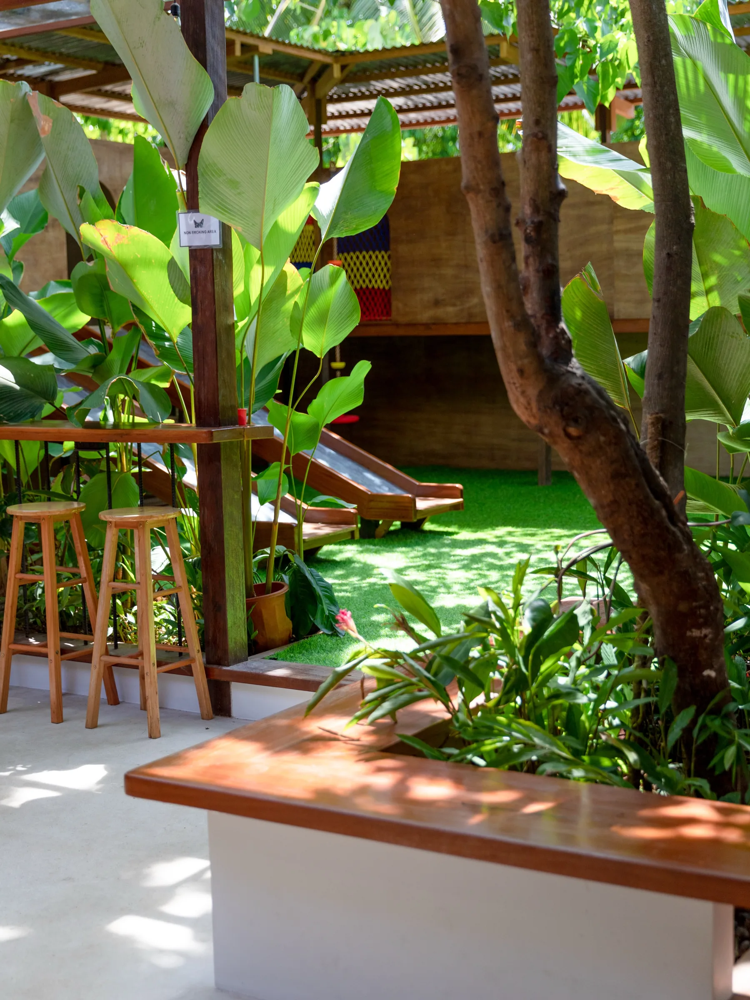
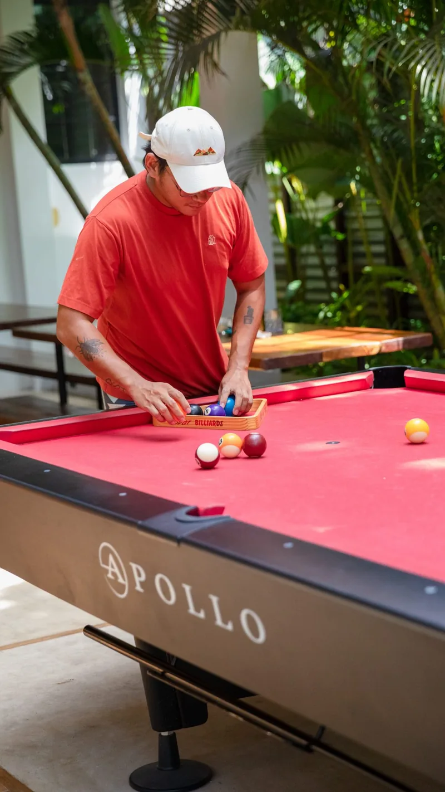

Basics
Four lessons on how the website and the tools work and where everything runs.
Four short lessons in text and pictures. They explain how the website is built, how it works together with the tools, what each tool is for, and where everything runs and what it costs.
Where everything runs
The Cloudflare account of the house, on the free plan.
Bought by you. Your own address for the website.
Runs as it is. No hosting fee.
No fee.
Holds the files of the website and the tools.
Save drafts and publish changes.
Counts the visits for Visitors.
Where the website and the tools run, and what it costs.
Guides and lessons
4 lessons.

How the website is built
Six pages, made from finished files, with the photos, sentences and menu of The Cat & Gun.

How the website and the tools fit together
Each fact is kept in one place. Every change waits in a draft until you publish it.

The nine tools
What each tool is for, and the guide that shows it.

Where it runs and what it costs
Website and tools run in the Cloudflare account of The Cat & Gun, on the free plan.
Every tool, area by area
Open a drawer to see the areas of a tool. The room of each tool lists every function.
01Control panelEvery tool of The Cat & Gun opens from the control panel.7 functions
- «Greeting and house»: The top of the page greets Julie and names the house.
- «One window per tool»: Seven windows open the tools.
- «Today on the website»: One line shows the visits of today.
- «The bar at the top»: The bar at the top leads to every tool and comes back when you scroll up.
- «A section per tool»: Further down, each tool has its own section, «No. 1 of 8» to «No. 8 of 8».
- «Visitors in numbers»: The section of Visitors shows numbers of the website.
- «Footer and help»: The footer holds the details of the house and the way to help.
02Edit websiteWith «Edit website» you keep the website of The Cat & Gun up to date yourself: texts, photos, phone, address, opening hours and a notice for guests.8 functions
- «The Overview»: The Overview is the start page of the tool.
- «Change a text»: Texts are changed right next to the page as guests see it.
- «Change a photo»: Click a photo on the page to swap it.
- «Phone, address & hours»: Details that appear on many pages are kept in one place.
- «Notice for guests»: A notice shows at the top of every page.
- «Save, compare, publish»: Nothing goes online by itself. What you save waits in the draft until you publish it.
- «Earlier versions»: Every publish is kept.
- «When something goes wrong»: Every message leads to help.
03Menus & price listsHere you keep the dishes, drinks and prices of The Cat & Gun. The same data makes the PDF for the printer and the menu page of the website.8 functions
- «Three menus»: Drinks, Coffee & juices and Kitchen, with the pages, sections and order of the printed menu.
- «Change an item («Simple»)»: Double-click or the pencil opens an item.
- «Add, copy, move, hide»: Each item has its own buttons.
- «Menu or website»: A switch above the preview changes the view.
- «Design the menu («Advanced»)»: In «Advanced» you design right on the menu.
- «Draft, check, publish»: Every change is a draft first. PDF and website change only when you publish.
- «Earlier versions and log»: The last versions stay in the tool.
- «Keys and messages»: Shortcuts and keywords help with daily work.
04Inquiries & chatHere you see what guests ask the chat on the website when it has no answer, and you give the chat new answers. The chat works without AI.8 functions
- «Overview»: The start page shows what waits for you.
- «Try the chat»: You see the chat the way a guest will see it.
- «Inbox»: Guests who send a question and leave a contact are in the inbox.
- «Personal reply»: Under the question is a sheet with the logo for a reply to one guest.
- «Questions and answers for every guest»: Every question guests sent stands here by topic.
- «Your answers»: All answers you wrote stand here as cards.
- «What the chat knows»: The chat only answers with the lines here.
- «Publish and earlier versions»: Everything you save goes into the draft first. Guests see it only after «Publish».
05Brand book editorThe Brand book editor holds the colours, fonts, photos, lines and elements of The Cat & Gun. The Sticker editor, Print & feed and the Brand book take them from here.8 functions
- «What is where»: The editor is built like the other tools.
- «Colours»: All colours of the house stand in their palettes: Print, Super Juices and Website.
- «More options»: Switch «Mode» to «More options» for palettes, shades and contrast.
- «Fonts»: Four uses, each with one font: titles, running text, numbers and titles in print.
- «Photos»: The photos of the website, each with its title.
- «Lines»: Name, place, opening hours and the sentences of the house, as the design tools use them.
- «Logo & elements»: The wordmark, the ampersand, the pool ball and the stickers. Each colour in them is a part.
- «Save, publish, earlier versions»: Changes wait in a draft. Publishing puts them into every tool.
06Brand bookThe Brand book is the brand of The Cat & Gun in one place: photos in the right size, logo files and colour values. It saves nothing and changes nothing.7 functions
- «Overview»: Three parts for every day and the style guide.
- «Photos»: All photos of the house are under «Photos».
- «The right size»: A click on a photo opens it large, with four ready sizes.
- «Logo & files»: Everything a designer or a print shop needs.
- «Colour values»: The colours stand with name and note: the print pieces, the six Super Juices and the website.
- «Colour check»: Check if the colours of a draft from a designer fit The Cat & Gun.
- «Style guide and changes»: The style guide shows the brand page by page.
07Sticker editorWith the Sticker editor you change the stickers of the house, design new ones and get print files. It works without AI.7 functions
- «All stickers»: The overview shows the stickers of the house by area.
- «Quick changes»: The tab «Quick» changes words and colours.
- «Design»: Click a part of the sticker to change it in the panel «Design».
- «More tools»: «More tools» opens the advanced tools.
- «A new sticker»: New stickers start from a shape or a sticker of the house.
- «Print check and print file»: Before printing, the tool checks the sticker.
- «Save, publish, print files»: The bar at the bottom works like in the other tools.
08Print & feedPrint & feed makes signs, coasters, table cards, posters and Instagram posts from templates of the house, as PDF to print or as a picture. It works without AI.7 functions
- «Start page»: The start page shows what you can make.
- «House pieces»: The printed pieces of the house can be edited as documents.
- «Design»: A template opens in the editor.
- «Brand kit»: The tab «Brand kit» holds the colours, fonts and elements of the Brand book editor.
- «Instagram»: Posts and stories are made in the same editor.
- «Print»: Before printing, the tool checks the design.
- «My designs and release»: Your designs are kept in the browser.
09VisitorsVisitors shows who visits the website: from which country and website guests come, on which device, and what they look at. Here you only read.8 functions
- «How Visitors is built»: The sections stand on the left.
- «Overview»: Four numbers and the visits per day.
- «Origin»: Where guests come from.
- «Time»: When visits start, in Siargao time.
- «Pages and trend»: What is viewed and how visits develop.
- «On the way»: A guest is on the way when they tap Call or open the directions.
- «Test data»: The tool has test data to show all views.
- «How we count»: «How we count» lists what is counted and what is never counted.
Reading order
The lessons build on each other:
How the website is built: the six pages and what they are made of.
How the website and the tools fit together: each fact in one place, draft and publish.
The nine tools: what each one is for.
Where it runs and what it costs: the account of the house and the domain.
What you know now
Website and tools run in the account of the house.
The domain costs 800 PHP a year.
Website and tools run without fees.
No tool uses AI.